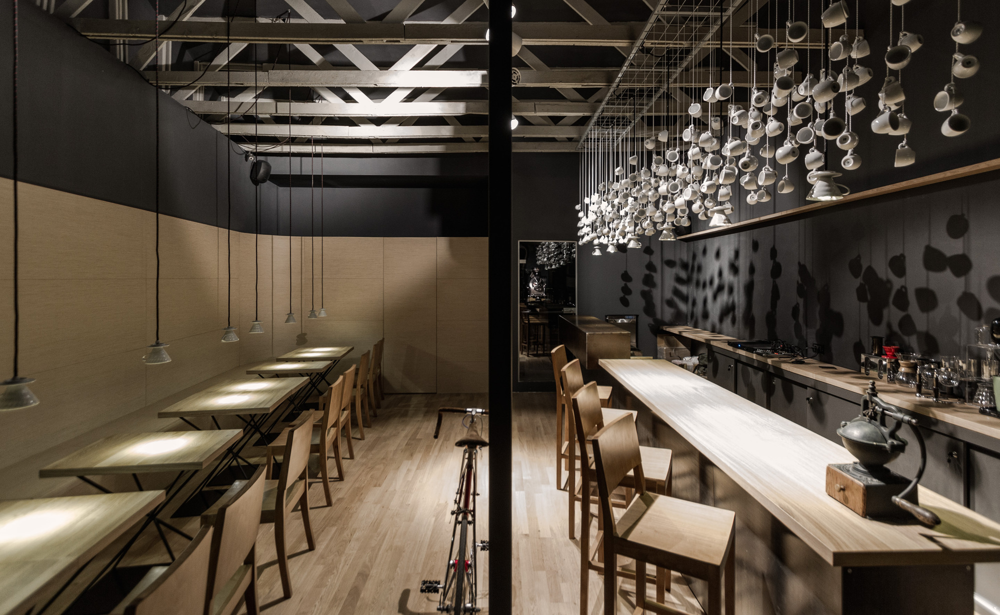

AROMA Coffee & Tea is proud to be locally owned and operated serving award-winning, fresh, quality-focused specialty coffee and tea. With over ten years of experience in the industry, we source, roast, blend and serve the best coffee in Ohio. We offer a variety of estate and co-op coffees as well as a few select and specialized blends. We also offer a selection of coffee-related supplies and equipment that we endorse.
It's the finer things in life
